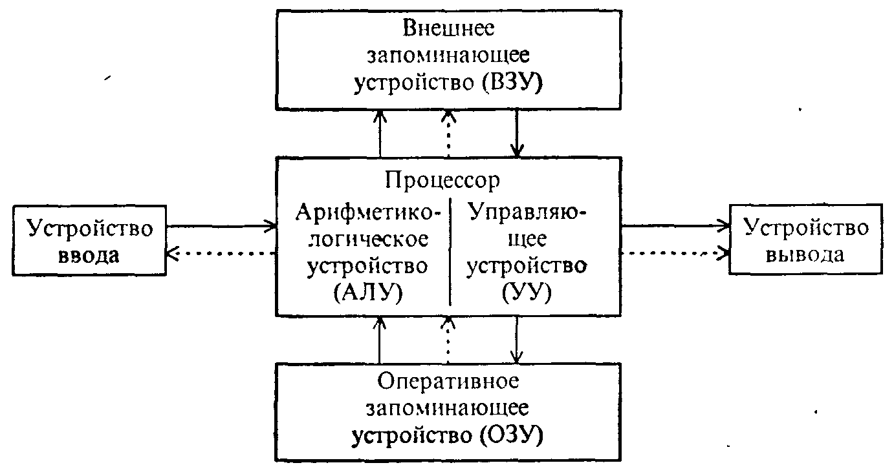
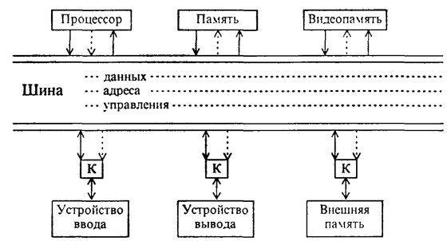
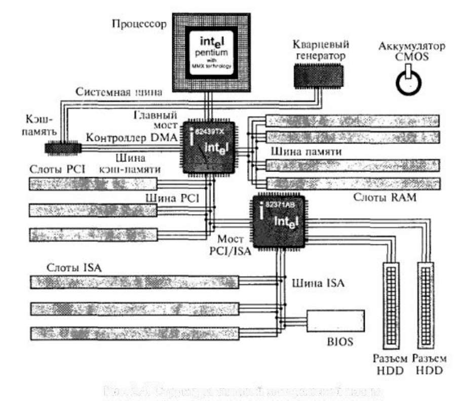
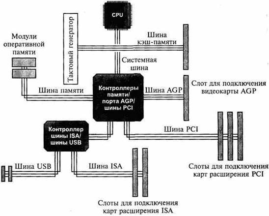
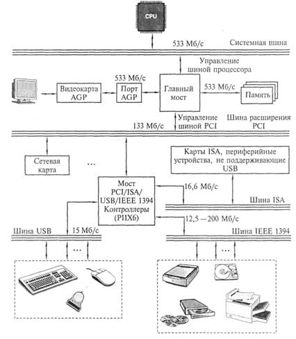
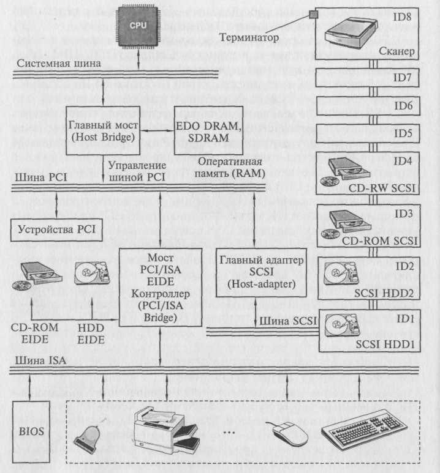
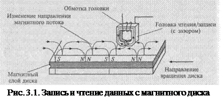

Подготовка к экзамену по ТСИ
Устройство и принцип действия ЭВМ
Архитектура Фон-Неймона

Взаимодействие основных устройств компьютера реализуется в определенной последовательности. В память компьютера вводится программа с помощью какого-либо внешнего устройства. Память компьютера состоит из некоторого числа пронумерованных ячеек. В каждой ячейке могут находится данные или инструкции программ. Номер(адрес) очередной ячейки памяти из которой будет извлечена следующая команда программы указывается спец устройством, счетчиком комманд в УУ. УУ считывает содержимое ячейки памяти где находится первая команда программы и организует ее выполнение. Как правило после выполнения одной из команды УУ начинает выполнять команду из ячейки памяти которая находится непосредственно за ячейкой, содержащей только что выполненную команду.
УУ выполняет инструкции программы автоматически и может обмениваться инфорамцией с ОЗУ, а также внешними устройствами. По скольку ВУ работают значительно медленней чем остальные части компьютера, УУ может приостанавливать выполнение программы до завершения операции ввода/вывода с ВУ. Все результаты выполненной программы до завершения операции должны быть выведены на ВУ, после чего компьютер переходит в режим ожидания каких-либо внешних сигналов от устройств.
Схема устройств современных компьютеров несколько отличается от приведенной выше, например АЛУ и УУ соединены в единое устройство которое называется центральный процессор(ЦП). Именно с третьего поколения ЭВМ был переход от вычислительных элементов транзисторов к интегральным микросхемам. В них не только были значительно уменьшенные размеры базовых функциональных узлов, но и появилась возможность сущecтвенно повысить быстродействие процессора. С появлением такой возможности возникло противоречие между высокой скоростью обмена информации внутри компьютера и медленной работой устройств ввода/вывода. Решение проблемы было найдено путем освобождения процессора от функции обмена и передачи их спец. электр. схемам управления работы внещних устройств.
Такие схемы имели различные названия, каналы обмена, процессы ввода/вывода, переферийные процессора. Все чаще используется термин "контроллер внешнего устройства. Контроллер можно представить как специализированный процессор, который управляет работой какого-либо ВУ по специальным встроенным программам обмена. Например контроллер дисковода обеспечивает позиционирование головки чтения или записи информации. Дальнейший обмен информацией происходит без участия процессора под руководством контроллера. В каждом контроллере существуют внутренние регистры памяти, в которые заносятся результаты выполнения каждой операции и данная информация в дальнейшем может быть прочитана процессором
Наличие таких интелектуальных контроллеров стало отличительной чертой III и IV поколения ЭВМ. А такая компьютерная архитектура называлась шинной архитектурой. Где для связи между отдельными функциональными узлами используется общая магистраль - шина состоящая из 3-х частей:
- шина данных
- шина адреса
- шина управления
Шинная архитектура
На некоторых моделях шины данных адреса объеденены. На шину сначала выставляется адрес, а потом данные. Сигналы по шине управления определяют для какой цели используется шина в каждый конкретный момент времени. Такая открытость архитектуры позволяет пользователю свободно выбирать состав внешних устройств, т.е конфигурировать компьютер.
Процессор, представляет собой функционально законченное устройство и является основным устройством ПК. Процессор выполняет обработку информации. Он выполняет вычисления по хранящейся в запоминающем устройстве программе и обеспечивает общее управелние компьютером
Память, содержит обрабатываемые данные и выполняемы программы, которые поступают через устройства ввода/вывода. Память представляет собой сложную структуру, построенную по иерархическому принципу, состоящему из запоминающих устройств различных типов.
Функционально она делится на две части: внутреннюю и внешнюю.
Внутренняя - запоминающее устройство напрямую связанное с процессором и предназначенное для хранения выполняемых программ и данных, которые непосредственно участвуют в вычислениях. Обращение к внутренней памяти осуществляется с высоким быстродействием, но она имеет ограниченный объем, который определяется системой адрессации машины. В свою очередь внутренняя память делится на оперативную (ОП) и постоянную (ПЗУ).
Постоянная память, обеспечивает хранение и выдачу информации. Содержимое постоянной памяти заполняется при изготовлении компьютера и неподлежит изменению в обычных условиях. В постоянной памяти хранятся часто используемые (универсальные) программы и данные, а также некоторые программы операционной системы, программы тестирования ПК и другие.
При включении питания содержимое ПЗУ сохраняется. Такой вид памяти сокращенно называется ROM. Значительная часть программ хранящихся в ПЗУ связанна с обслуживанием ввода/вывода компьютера, поэтому ее часто называют ROM BIOS.
BIOS - basic input output system, обеспечивает тестирование устройств, а также некоторую надстройку первичного оборудования.
Оперативная память, по объему составляет большую часть внутренней памяти. Служит для приема, хранения и выдачи информации. При выключении питания содержимое ОП в большинстве случаев уничтожается. Память называется оперативной потому что работает так быстро что процесс его практически не приходится ждать при чтении данных и их записи. ОП обозначается RAM (random access memory). В большенстве своем, объем установленной ОП определяет с каким ПО можно работать. При недостатке ОП некоторые программы либо не будут работать либо будут работать крайне медленно.
Кэш-память - сверх быстродействующая память которая обеспечивает ускорение доступа к ОП, она распологается между ОП и процессором и хранит копии наиболее часто используемых участков ОП, при обращении микропроцессора к памяти сначала происходит поиск данных в КЭШ-памяти. Зачастую необходимые микропроцессору данные уже хранятся в КЭШ-памяти поэтому среднее время доступа уменьшается.
CMOS-RAM - участок памяти для хранения параметров конфигурации компьютера. Из названия следует, что память эта выполнена по технологии CMOS, т.е. память с низким электропотреблением. Содержимое данной памяти не изменяется при выключении ПК, а питание ее осуществляется специальным аккумулятором. Именно в данной памяти содержится программа настройки конфигурации компьютера BIOS.
Видеопамять, предназначенна для хранения изображений выводимых на экран. Обычно эта память входит в состав видеоконтроллера, электронной схемы которая управляет выводом изображения на экран.
Внешняя память предназначенна для размещения больших объемов информации и обменом ей с ОП. Для построения ВП используют энергозависимые носители информации: диски (жесткие, гибкие), ленты, флеш-память и тд. Емкость внешней памяти практически не имеет ограничения, но для обращения к ней требуется больше времени чем к внутренней памяти.
Внешняя память по принципам функционирования подразделяется на устройства прямого доступа и устройства последовательного доступа. Устройства прямого доступа обладают большим быстродействием поэтому они являются основными внешними устройствами. Устройства последовательного доступа, в основном применяются в системах резервирования.
Устройства ввода/вывода служат для обеспечения общения пользователя с ПК и относятся к переферийным или внещним устройствам
Сам по себе компьютер не обладает никакими знаниями все знания сосредоточены в ПО.
Системные программы - выполняют функции обеспечения нормальной работы компьютера, его обслуживания и настройки
Основным системным ПО является ОС которая состоит как минимум из 3-х обязательных частей:
- Ядро - коммандный интерпретатор. Обеспечивает перевод с программного языка на язык програмных кодов.
- Драйвера - программные алгоритмы для работы с теми или иными устройствами.
- Интерфейс - графическое устройство для удобной работы с ПК.
Утилиты - комплекты полезных программ предназначенных для обслуживания и совершенствования работы ПК.
Прогрманые тестеры - предназначенны для тестирования ПО
Прикладные программы - обеспечивают непосредственное выполнение пользователем работ.
Самоконтроль
Материнская плата
Материнская плата - основной коспонент каждого ПК. Она называется главной или системной платой. Самостоятельный элемент, который управляет внутренними связями и взаимодействует с внешними устройствами. Она является основным элементом внутри ПК, влияющим на производительность компьютера в целом. Конструктивно материнская плата является главной,на которой размещены все основные элементы ПК, линии соединения и разъемы для подключения внешних устройств. Тип установленной материнской платы определяет общую производительность системы, а также возможность модернизации и подключения внешних устройств.
Структурная схема типовой материнской платы.
- Процессор установленный в специальный разъем - сокет и охлаждаемый вентилятором с радиатором - кулер.
- Микросхемы кэш-памяти - в процессорах кэш-память 1-го и 2-го уровня устанавливается в нем, а при наличии кэш-памяти 3-го уровня она может устанавливаться на материнскую плату.
- Слоты для установки модулей ОП
- Слоты для установки карт расширения (сетевая карта, видеокарта) - как правило на материнских платах имеется разъем для карт стандарта ISA (практически не используется) и PCI. Так же на материнской плате может присутствовать слот AGP, позволяющие устанавливать видеокарту с соответствующим стандартом, а так же модернизированный разъем PCI-E для видеокарт и иного оборудования, для высокоскоростной передачи данных.
- Микросхема перепрограммируемой памяти, в которой хранятся: прграмма BIOS, программы тестирования ПК,загрузки ОС, драйверы первичных устройств,начальные установки.
- Мосты - в современном компьютере существуют наборы микросхем для совместной работы и выполнения заданных функций, более правильное название - чипсет. Выполняет функции связующего компонента, обеспечивая взаимодействие центрального процессора с различными типами памяти, устройствами ввода - вывода, контроллерами, адаптерами.
- Разъемы для подключения накопителей HDD, IDD. Так же в современных материнских платах присутствуют интерфейсы USB, SATA.
Все компоненты материнской платы связаны между собой системрй проводников (линий) по которым происходит обмен информации. Такую совокупность линий называют информационной шиной или просто шиной. Размеры материнской платы, а так же отверстия внутри нее стандартизированы. При выборе материнской платы необходимо согласовать ее размеры с типом корпуса, а при установке следует исключить контакты с дном и с боковыми поверхностями, во избежание короткого замыкания. Стандартизированный размер материнской платы, а так же общая стратегия расположения на ней основных микросхем, состав, ее формат, размер - фактор материнской платы.
В качестве основного фактора принят фор фактор ATX. Специфика ATX для материнской платы предусматривает:
- Интеграцию на материнской плате стандартных периферийных устройств (контроллеров дисководо, винчестеров, параллельных и последовательных портов, видеозвуковых адаптеров, модемов и интерфейсов локальных сетей).
- Наличие встроенной двойной панели разъемов ввода-вывода, находящейся на тыльной стороне материнской платы.
- Местоположение процессора и модулей памяти выполнена ближе к блоку питания, тем самым они не создают помех при замене карт расширения.
- Разъемы контроллеров ввода-вывода интегрированных в материнскую плату распологаются ближе к накопителям, что способствует уменьшению длины внутренних кабелей.
Разработаны следующие модификации материнской платы ATX: мини ATX, микро ATX, FLEX ATX.
Струтура и стандарты шин ПК
Шиной называется вся совокупность линий (проводников на материнской плате), по которым обмениваются информацией компоненты и устройства ПК. Шина предназначена для обмена информацией между двумя и более устройствами. Шина, связывающая только два устройства, называется портом.
Шина имеет места для подключения внешних устройств - слоты, которые в результате становятся частью шины и могут обмениваться информацией со всеми другими подключенными к ней устройствами.
Шины в ПК различаются по своему функциональному назначению:
- системная шина (шина CPU) используется микросхемами Chipset для пересылки информации к CPU и обратно;
- шина кэш-памяти предназначена для обмена информацией между CPU и кэш-памятью;
- шина памяти используется для обмена информацией между оперативной памятью RAM и CPU;
- шины ввода-вывода информации подразделяются на стандартные и локальные.
Локальная шина ввода-вывода - это скоростная шина, предназначенная для обмена информацией между быстродействующими периферийными устройствами (видеоадаптерами, сетевыми картами, картами сканера и т.д.) и системной шиной под управлением CPU. В настоящее время в качестве локальной шины используется шина PCI. Для ускорения ввода-вывода видеоданных и повышения производительности ПК при обработке трехмерных изображений корпорацией Intel была разработана шина AGP.
Стандартная шина ввода-вывода используется для подключения для подключения к шинам более медленных устройств (мышь, клавиатура, модем). Ранее в качестве этой шины использовалась шина стандарта ISA. В настоящее время - шина USB. Эта шина имеет собственную архитектуру, позволяющую реализовать важнейшие ее свойства - возможность параллельного подключения практически неограниченного числа внешних устройств и обеспечение обмена информацией между ними.
Архитектура любой шины имеет следующие компоненты:
- линии для обмена данными (шина данных);
- линии для адресации данных (шина адреса);
- линии управления данными (шина управления);
- контроллер шины.
Контроллер шины осуществляет управление процессом обмена данными и служебными сигналами и обычно выполняется в виде отдельной микросхемы либо в виде совместимого набора микросхем Chipset.
Шина данных обеспечивает обмен данными между CPU, картами расширения, установленными в слоты, и памятью RAM. Чем выше разрядность шины, тем больше данных может быть передано за один такт и тем выше производительность ПК.
Шина адреса служит для указания адреса к какому-либо устройству ПК, с которым CPU производит обмен данными. Каждый компонент ПК, каждый регистр ввода-вывода и ячейка RAM имеют свой адрес и входят в общее адресное пространство ПК. По шине адреса передается идентификационный код (адрес) отправителя или получателя данных.
Для ускорения обмена данными используется устройство промежуточного хранения данных - оперативная память - RAM. При этом решающую роль играет объём данных, которые могут временно храниться в ней.
Объём зависит от разрядности адресной шины (числа линий) и тем самым от максимально возможного числа адресов, генерируемых процессором на адресной шине, т.е. от числа ячеек RAM, которым может быть присвоен адрес. Число ячеек RAM не должно превышать 2n, где n - разрядность адресной шины. В противном случае часть ячеек не будет использоваться, поскольку процессор не сможет адресоваться к ним.
Шина управления передаёт ряд служебных сигналов:
записи считывания, готовности к приему - передачи данных, подтверждения приёма данных, аппаратного прерывания, управления и других, чтобы обеспечить передачу данных.
Основные характеристики шины
Разрядность шины определяется числом параллельных проводников, входящих в неё.
Пропускная способность шины определяется количеством байтов информации, передаваемых по шине за секунду. Для определения пропускной способности шины необходимо умножить тактовую частоту шины на её разрядность.
Внешние устройства к шинам подключаются посредством интерфейса - представляющего собой совокупность различных характеристик какого-либо периферийного устройства ПК, определяющих организацию обмена информацией между ним и центральным процессором. К числу таких характеристик относятся электрические и временные параметры, набор управляющих сигналов, протокол обмена данными и конструктивные особенности подключения. Обмен данными между компонентами ПК возможен, только если интерфейсы этих компонентов совместимы.
Стандарты шин ПК
Принцип IBM-совместимости подразумевает стандартизацию интерфейсов отдельных компонентов ПК, что, в свою очередь, определяет гибкость системы в целом, т.е. возможность по мере необходимости изменять конфигурацию системы и подключать различные периферийные устройства. В случае несовместимости интерфейсов используются контроллеры. Кроме того, гибкость и унификация системы достигаются за счет введения промежуточных стандартных интерфейсов, таких как интерфейсы последовательной и параллельной передачи данных. Эти итерфейсы необходимы для работы наиболее важных периферийных устройств ввода и вывода.
Системная шина предназначена для обмена информацией между CPU, памятью и другими устройствами, входящими в систему.
Шины ввода/вывода совершенствуются в соответствии с развитием периферийных устройств ПК.
Шина ISA в течение многих лет считалась стандартом ПК, однако и до сих пор сохраняется в некоторых ПК наряду с современной Шиной PCI. Корпорация Intel совместно с Microsoft разработала стратегию постепенного отказа от шины ISA. Вначале планируется Исключить ISA-разъемы на материнской плате, а впоследствии исключить слоты ISA и подключать дисководы, мыши, клавиатуры, сканеры к шине USB, а винчестеры, приводы CD-ROM, DVD-ROM — к шине ШЕЕ 1394. Однако наличие огромного парка ПК с шиной ISA и соответствующих комплектующих позволяет предполагать, что 16-разрядная шина ISA будет востребована еще на протяжении некоторого времени.
Шина EISA стала дальнейшим развитием шины ISA в направлении повышения производительности системы и совместимости ее компонентов. Шина не получила широкого распространения в связи с ее высокой стоимостью и пропускной способностью, уступающей пропускной способности появившейся на рынке шины VESA.
Шина VESA, или VLB, предназначена для связи CPU с быстрыми периферийными устройствами и представляет собой расширение шины ISA для обмена видеоданными. Во времена преобладания на компьютерном рынке процессора CPU 80486 шина VLB была достаточно популярна, однако в настоящее время ее вытеснила более производительная шина PCI.
Архитектура шины PCI

Шина PCI была разработана Intel для процессоров pentium и представляля собой совершенно новую шину. В ней был заложен принцип применения мостов, которые осуществляли связь мужде шиной PCI и другими типами шин. В шине PCI есть Bus Mastering, тоесть способность внешнего устройства управлять шиной при перессылке данных без участия процессора, тем самым позволяет процессору сосредоточится на других задачах пока происходит процесс перессылки. В современных материнских платах тактовая чистота PCI задаётся как половина тактовой частоты системной шины. Если системная шина 66 Ггерц, то PCI 33 Ггерц соответственно. В наше время данная шина стала стандартом среди шнин ввода-вывода.
Архитектура шины USB
Шина USB созданна для подключений переферийных устройств вне корпуса скорость обмена информацией по шине USB составляет от 12 мб до 40 гб в зависимости от версии. С помощью USB можно подлючать такие переферийные устройства, как мышь, клавиатура, принтер и т.п. при этом нет необходимости выключать питание компьютера.
Шина поддерживает технологию plug and play, что позволяет при подключении устройства его автоматичесски определять и регулировать. Благодаря специальным расширяющим USB устройствам - USB хабам, к компьютеру можно подключить до 127 периферийных устройств.
Шина SCSI с подключенными устройствами
Шина SCSI обеспечивает скорость передачи данных до 320 мб/с.Она предусматривает подключение до 8 устроит: привод cd rom, жесткие диски, сканеры т.д. Отличительной особенностью является то, что она представляет собой кабельные шлейп с другими шинами. Она связана через хост адаптер, каждое устройство подключенное шиной имеет свой идентификационный номер(ID). Любое устройство подключенное к шине может инициировать обмен с другим устройствами. Существует широкий диапазон версии шины начиная от 1 версии, которая обеспечивала пропускную способность 5 мегабайт в секунду и заканчивая последней Ultra 320 с пропускной способностью 320 мб/с.
Последовательные и паралельные порты
Последовательный порт (интерфейс) данные в нем передаются на друг за другом по видно используются лишь одна сигнальная линия на передачу групп битов отводится свой кван времени (интервал) в качестве примера последовательного интерфейса - USB шина, шина PSI-E, сетевого подключения для локальных и глобальных сетей. В последовательном интерфейсе скорость передачи данных ниже, чем в параллельном, при такой передаче данных возможен обмен данными в двух направлениях при этом прием и передача данных осуществляется с одинаковой тактовой частотой. Для установления связи между двумя последовательными интерфейсами необходимо предварительно сконфигурировать их, то есть указать, как будет осуществляться обмен данными. Обычно конфигурирование осуществляется автоматически. Параллельный интерфейс для каждого бита передаваемой группы используется своя сигнальная линия и все биты группы передаются одновременно за один квант времени. В качестве примера SCSI - шина PCI и группа интерфейсов АТА. На первый взгляд организация параллельного интерфейса проще и нагляднее. Недостатком интерфейса является большое количество проводов и контактов в разъемах в соединительном кабеле. Отсюда громоздкость и дороговизна кабелей, а также самих интерфейсных цепей.
Самоконтроль
- Что вы знаете о шине SCSI.
- Объясните как работает последовательный и паралельный порты.
Процессоры
Основные характеристики процессора
Процессор - это основная вычислительное устройство компьютерной системы является "сердце" материнской платы, поскольку находится в постоянном взаимодействии с другими элементами материнской платы пока компьютер включен. Лидерами производства процессоров являются Intel и AMD.
Процессоре подразделяются по типам: обозначения процессора начинается с цифры 80 числа,затем следуют 2 или 3 цифры, которые при необходимости дополняются буквами и цифрами указывающими на тактовую частоту процессора. Перед обозначением типа процессора чаще всего сокращение идентифицирующий изготовителя. Например i80486DX-50 данная маркировка указывает на Intel. На любом процессорном кристалле
- Процессор - состоит из транзисторов.
- Сопроцессор - спецблок для операций с плавающей точкой, применяется для особо точных расчетов, а также для работы с графикой.
- Кэш память 1 уровня сверх быстродейственная память, предназначена для хранения промежуточных данных.
- Кэш память 2 уровня.
- 1. Степень интеграции.
- 2. Разрядность обрабатываемых данных.
- 3. Тактовая частота.
- 4. Память к которой может адресоваться процессор.
- 5. Объем установленной кэш памяти.
Степень интеграции показывает какое число транзисторов в микросхеме умещается. Если в чипе процессов первого поколения размещалось около 3000 транзисторов, то в современных около миллиарда.
Разрядность обрабатываемых данных определяется количеством бит информации, которые процессор может обработать одновременно 16, 32, 64 bit.
Тактовая частота процессора определяется частотой работы тактового генератора который синхронизирует работу. Частота работы тактового генератора в мегагерцах. Первые ПК имели 1 тактовый генератор с частотой 8 мегагерц. Он синхронизировал работы процессора, памяти, шины ввода вывода. Современных процессорах имеется несколько тактовых генераторов работающих синхронно на разных частотах.
Объем памяти который может адресовать сопроцессор определяется объемом оперативной памяти персонального компьютера. Процессоры первого поколения имели максимальный объем адресованной памяти 1 мб. Процессоры 6, 7 поколения 64 ГБ.
Особенности процессоров различных поколений
Особенности процессов разных поколений.
Процессоре 1 поколения имели аббревиатуру 8086/ 8088 их тактовая частота составляло 4,77 мГц и объем оперативной памяти 256 кБайт.
Процессоры 2 поколения имели аббревиатуру 80286. Тактовая частота 20 мГц. Объем оперативной памяти 16 мБайт. Процессор мог обращаться к 1 ГБ виртуальной памяти.
Процессоры 3 поколения 80386 отличались от своих предшественников возможностью работы виртуальном режиме, наличии кэш памяти расположенный на материнской плате и 32 разрядным ядром. Тактовая частота 33 мГц. Разрядность обеспечивала адресацию физической памяти до 4 гигабайт виртуальный до 64 гигабайт.
Процессоры 4 поколения 80486 отличались от предыдущих тем что в само ядро процессора интегрирована кэш память и сопроцессор. C наличием сопроцессоров на 80% сократилось время вычислений таких операций как умножение и возведение в степень. Типичные представители имели тактовую частоту 33 - 50 мГц и 16 кБайт внутренний кэш-памяти.
Процессоры 5 поколения были Intel типа Pentium. Они поддерживали 64-разрядную шину с тактовой частотой 66 мГц. В них присутствует технология предсказание переходов вычисления, а также параллельная и конвейерная обработка данных. Предсказание переходов реализуется благодаря хранению данных последних 256 переходах в специальном буфере адреса переходов. Кэш память объемом 16 Кбайт разделена на память данных и память команд по 8 кБайт.
Pentium 1 являлись 32-двухразрядными процессорами и работали на тактовой частоте 60 и 66 мГц.
Pentium 2 тактовая частота процессора составляла 160 мГц в последнем она достигала 200 мГц.
Pentium 3 основным отличием является усовершенствованный тип изготовления, который позволяет обеспечивать объем ядра процессора 0,25 мм в то время как у 1 и 2 поколения 0,8 и 0,35 микрометра. Pentium 3 имел расширенные возможности обработки изображения, потоков аудио и видеоданных, и имел тактовую частоту процессора свыше 600 МГц и частоту системной шины и 1,33 ГГц.
Процессоры 6 поколения. Intel типа пентиум в том числе некоторые процессора пентиум 3, а ткаже и AMD, где основным отличием процессоров амд от intel наличии интегрированной кэш памяти 2 уровня объему 256 килобайт, а также наличие кэш памяти 3 уровня расположенный на материнской плате объемом от 200 килобайт до 2 мегабайт. Процессоре амд имели аббревиатуру к-6.
7 поколение процессоре данного поколения имели тактовую частоту свыше 1 гигагерца а также поддержка новой системной шины в 400 мегагерц типичными представителями 7 поколения является процессор амд с аббревиатурой atlon технологии изготовления 0,22 микрометра тактовая частота до 1 гигагерца, а также процессора пентиум 4 с тактовой частотой 1,5 гГц Установленные кэш памятью объемом 256 килобайт я 2 512 до 1024 килобайт в дальнейшем процессоров связано с 1 переходом на новую технологию производства и на сегодняшний момент технология производства intel core i9 - 14 нанометров
Оперативная память
Характеристики микросхем памяти
Накопители информации. Общие сведения
Накопитель информации - это устройство записи, воспроизведения и хранения информации.
Носитель информации - это предмет на который производится запись информации (диск, лента, твердотельный носитель).
Накопители информации могут быть классифицированны по следующим признакам:
- По способу хранения информации - магитоэлектрические, оптические и магнитооптические.
- По виду носителя информации - гибкие и жесткие магнитные диски, оптические и магнитооптические диски, на магнитной ленте и твердотельные накопители
- По способу организации доступа к информации
- Накопители прямого доступа
- Накопители последовательного доступа
- Накопители блочного доступа
- По типу устройства хранения информаци
- Встраиваемые
- Внешние
- Автономные
- ...
Значительная часть накопителей информации используемых в настоящее время на основе магнитных. В магнитных носителях цифровая запись производится на магниточувствительный материал. К таким материалам относятся некоторые разновидности оксида железа, никель, кобальт, различные сплавы, а так же такие материалы как магнитопласты и магнитоэласты со связкой из пластмасс и резины
Магнитное покрытие имеет толщину в несколько микрометров. Покрытие наносится на немагнитную основу, в качестве которой для магнитных лент и гибких дисков используются различные пластмассы, а для жестких дисков — алюминиевые сплавы и композиционные материалы подложки.
Магнитное покрытие диска имеет доменную структуру, т.е. состоит из множества намагниченных мельчайших частиц. Магнитный домен (от лат. dominium — владение) — это микроскопическая, однородно намагниченная область в ферромагнитных образцах, отделенная от соседних областей тонкими переходными слоями (доменными границами). Под воздействием внешнего магнитного поля собственные магнитные поля доменов ориентируются в соответствии с направлением магнитных силовых линий. После прекращения воздействия внешнего поля на поверхности домена образуются зоны остаточной намагниченности. Благодаря этому свойству на магнитном носителе сохраняется информация о действовавшем магнитном поле. При записи информации внешнее магнитное поле создается с помощью магнитной головки. В процессе считывания информации зоны остаточной намагниченности, оказавшись напротив магнитной головки, наводят в ней при считывании электродвижущую силу (ЭДС). Схема записи и чтения с магнитного диска дана на рис. 3.1. Изменение направления ЭДС в течение некоторого промежутка времени отождествляется с двоичной единицей, а отсутствие этого изменения — с нулем. Указанный промежуток времени называется битовым элементом.
Поверхность магнитного носителя рассматривается как последовательность точечных позиций, каждая из которых ассоциируется с битом информации. Поскольку расположение этих позиций определяется неточно, для записи требуются заранее нанесенные метки, которые помогают находить необходимые позиции записи. Для нанесения таких синхронизирующих меток должно быть произведено разбиение диска на дорожки и секторы — форматирование.
Организация быстрого доступа к информации на диске является важным этапом хранения данных. Оперативный доступ к любой части поверхности диска обеспечивается, во-первых, за счет придания ему быстрого вращения и, во-вторых, путем перемещения магнитной головки чтения/записи по радиусу диска. Гибкий диск вращается со скоростью 300—360 об/мин, а жесткий диск —3600— 7200 об/мин.
